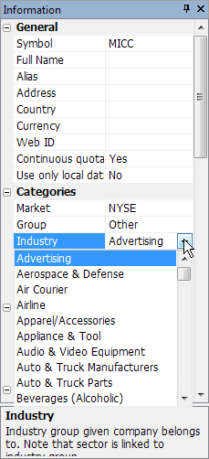
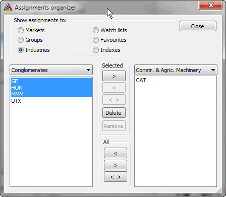
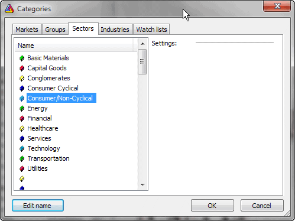
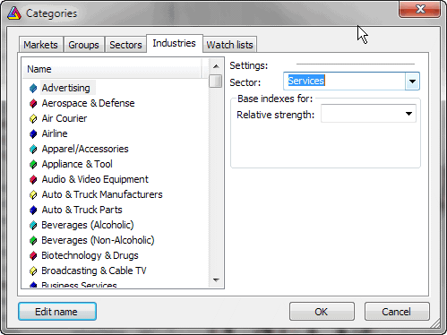

Understanding categories
AmiBroker has the ability to assign symbols to different categories, allowing
you (when properly set up) to narrow your analysis searches to symbols meeting
certain selection criteria (thanks to the Filter feature available in Quick Review
and Automatic Analysis windows). The initial setup of categories may be a
little complicated, especially when you want to track several thousand symbols.
|
Categories show up in the Symbols window.
The first and foremost thing to remember is that categories do NOT work like folders,
and the Workspace window does NOT work like Windows Explorer.
The difference is fundamental. In Windows Explorer, a file appears
(usually) only once in a given tree leaf.
In the symbol tree, a given symbol shows up multiple times because it appears in
every category leaf to which it belongs, even though it exists only as a single entity. The Symbols window is divided into three parts:
a) search box
b) category tree
c) symbol list
The search box allows you to perform full-text searches
(including wildcard matching) against symbol and full name within the selected
category. For example, if you select the "Technology" sector and type A* (letter 'A' and
wildcard character *), the symbol list will show all symbols belonging
to the Technology sector with a symbol or full name beginning with the letter 'A'.
Another example would be typing *-A0-FX; this will return all forex symbols
in the eSignal database (those ending with the -A0-FX substring).
The category tree (see the picture) shows different
kinds of categories.
The symbol list (bottom part) shows the list of symbols
belonging to the selected category. The symbol list can be sorted by symbol
or by full name. To sort, just click on the header row of the list. Once
you choose the desired sorting order, it will be kept for all subsequent category
choices and searches. Also, the order of columns can be changed so the Full Name
column appears as the first one. To rearrange a column, click on the
column header, hold down the mouse button and drag the column to the desired
location. Then release the mouse button.
A single symbol belongs to many categories at the same time. For example,
AAPL (Apple Inc.) will belong to:
- Stocks group category
- Nasdaq market category
- Information sector category
- Comp-Computer Mfg industry category
and may also belong to several watch lists and favorites categories. All
at the same time. That's why a single symbol will appear in many leaves of
the workspace symbol tree. Now, if you delete the SYMBOL, it will of course
disappear from all categories because you have deleted the symbol itself,
not its assignment to a category.
|

|
There are two types of categories:
- with mutually exclusive membership: groups, markets, sectors/industries,
GICS - it means that a symbol must belong to a single group, a single market, and
a single sector/industry at a time. You can move the symbol from one group/market/sector/industry
to another, but you cannot remove this assignment - you should create an "Unassigned" group/market/sector/industry
instead and move 'unassigned' symbols there.
- with free membership: watch lists/favorites/indexes - it means that a symbol
may belong to any number (including zero) of watch lists (and to a favorite/index
category too). In this case, you can remove this assignment by Watch List->Remove
Watch lists are covered in detail in the User's Guide: Tutorial:
Working with Watch Lists.
There is also one special category called "ALL" that shows up in
the workspace symbol tree. It simply lists all symbols present in the database.
Working with sectors and industries
Basics - predefined sectors and industries
Now, we will focus on setting up sectors and industries and assigning
the symbols to them. First, let me discuss some basic ideas.
AmiBroker comes with an example Dow Jones Industrials database holding all
30 components of this world's most famous market average. They are assigned
to predefined sectors and industries. These sectors and industries are exactly
the same as used on the Yahoo Finance site, and here is a table that shows them
all:
| Sector |
Industry |
| Basic Materials (0) |
Chemical Manufacturing |
| Chemicals - Plastics & Rubber |
| Containers & Packaging |
| Fabricated Plastic & Rubber |
| Forestry & Wood Products |
| Gold & Silver |
| Iron & Steel |
| Metal Mining |
| Misc. Fabricated Products |
| Non-Metallic Mining |
| Paper & Paper Products |
| Capital Goods (1) |
Aerospace & Defense |
| Constr. - Supplies & Fixtures |
| Constr. & Agric. Machinery |
| Construction - Raw Materials |
| Construction Services |
| Misc. Capital Goods |
| Mobile Homes & RVs |
| Conglomerates (2) |
Conglomerates |
| Consumer Cyclical (3) |
Apparel/Accessories |
| Appliance & Tool |
| Audio & Video Equipment |
| Auto & Truck Manufacturers |
| Auto & Truck Parts |
| Footwear |
| Furniture & Fixtures |
| Jewelry & Silverware |
| Photography |
| Recreational Products |
| Textiles - Non Apparel |
| Tires |
| Consumer/Non-Cyclical (4) |
Beverages (Alcoholic) |
| Beverages (Non-Alcoholic) |
| Crops |
| Fish/Livestock |
| Food Processing |
| Office Supplies |
| Personal & Household Prods. |
| Tobacco |
| Energy (5) |
Coal |
| Oil & Gas - Integrated |
| Oil & Gas Operations |
| Oil Well Services & Equipment |
| Financial (6) |
Consumer Financial Services |
| Insurance (Accident & Health) |
| Insurance (Life) |
| Insurance (Miscellaneous) |
| Insurance (Prop. & Casualty) |
| Investment Services |
| Misc. Financial Services |
| Money Center Banks |
| Regional Banks |
| S&Ls/Savings Banks |
| Healthcare (7) |
Biotechnology & Drugs |
| Healthcare Facilities |
| Major Drugs |
| Medical Equipment & Supplies |
| Services (8) |
Advertising |
| Broadcasting & Cable TV |
| Business Services |
| Casinos & Gaming |
| Communications Services |
| Hotels & Motels |
| Motion Pictures |
| Personal Services |
| Printing & Publishing |
| Printing Services |
| Real Estate Operations |
| Recreational Activities |
| Rental & Leasing |
| Restaurants |
| Retail (Apparel) |
| Retail (Catalog & Mail Order) |
| Retail (Department & Discount) |
| Retail (Drugs) |
| Retail (Grocery) |
| Retail (Home Improvement) |
| Retail (Specialty) |
| Retail (Technology) |
| Schools |
| Security Systems & Services |
| Waste Management Services |
| Technology (9) |
Communications Equipment |
| Computer Hardware |
| Computer Networks |
| Computer Peripherals |
| Computer Services |
| Computer Storage Devices |
| Electronic Instruments & Controls |
| Office Equipment |
| Scientific & Technical Instr. |
| Semiconductors |
| Software & Programming |
| Transportation (10) |
Air Courier |
| Airline |
| Misc. Transportation |
| Railroads |
| Trucking |
| Water Transportation |
| Utilities (11) |
Electric Utilities |
| Natural Gas Utilities |
| Water Utilities |
|
|
It is important to understand the difference between a sector and an industry: industries "belong" to sectors. For example, "Air Courier", "Airline", "Railroads", "Trucking" industries belong to the "Transportation" sector. So if a symbol is assigned to a given industry, it is also "automatically" assigned to the corresponding sector.
In the example DJIA database, each stock is assigned to a specific industry. For example, GM (General Motors) is assigned to the "Auto & Truck Manufacturers" industry, and this implies that GM belongs to the "Consumer/Cyclical" sector.
AmiBroker can handle up to 32 sectors and up to 256 industries.
How to assign a symbol to an industry?
You can change the industry to which a given symbol is assigned by using the Window->Information
dialog (Industry combo box)

or using Symbol->Organize Assignments.

The first method is fine if you want to change a single symbol's settings. The latter
is better if you want to move multiple symbols from one category to another.
How to define your own sectors and industries
Please go to Symbol->Categories dialog, the last two tabs are
"Sectors" and "Industries". First, switch to the "Sectors" tab, and you will see the list of 32 sector names. You can now select a sector
by clicking once on its name and edit the sector name by pressing ENTER or clicking
the "Edit name" button. Hit ENTER again to accept the name change.

After you renamed the sectors, you can switch to the "Industries"
tab. Similarly to the previous tab, you can select an industry in the list and
edit its name in the same manner. Here you can also assign the industry to the
sector using the "Sector" combo. Just select the sector to which you want to assign the currently selected industry.

Where sector and industry information is stored?
Generally speaking, this information is stored in the AmiBroker database. The sector
and industry names and settings are stored in the broker.workspace file (in
the workspace folder), and symbol data files hold only the information about the
assignment of the symbol to a given industry (IndustryID).
When you create a new workspace (a database), AmiBroker sets up its industries and sectors according to the templates stored in the "broker.sectors"
and "broker.industries" files. These are simple text files that can
be edited with a plain text editor (such as Notepad). These files can also be
used for quick, automatic setup of the sectors and industries. AmiBroker comes
with predefined broker.sectors and broker.industries that follow the convention described above (see the table). You can rewrite the broker.sectors and broker.industries
files to define your own default scheme. So, "broker.sectors" and
"broker.industries" files are used as a template when creating a new workspace. Once a workspace is created, these files are not taken into consideration.
In this way, you may have different categories in each workspace. If you want
AmiBroker to load them into an already existing workspace, please delete the broker.workspace
file before opening the workspace. If you then open the workspace, AmiBroker
will read broker.sectors and broker.industries.
The layout of the broker.sectors file is very simple: it is a plain text file holding
sector names, written line by line as shown below:
Basic Materials
Capital Goods
Conglomerates
Consumer Cyclical
Consumer/Non-Cyclical
Energy
Financial
Healthcare
Services
Technology
Transportation
Utilities
The layout of the broker.industries file is similar, but in addition to industry names,
there is a number at the beginning of each line:
8 Advertising
1 Aerospace & Defense
10 Air Courier
10 Airline
3 Apparel/Accessories
3 Appliance & Tool
3 Audio & Video Equipment
3 Auto & Truck Manufacturers
3 Auto & Truck Parts
4 Beverages (Alcoholic)
4 Beverages (Non-Alcoholic)
7 Biotechnology & Drugs
8 Broadcasting & Cable TV
8 Business Services
8 Casinos & Gaming
0 Chemical Manufacturing
0 Chemicals - Plastics & Rubber
5 Coal
9 Communications Equipment
The numbers at the front of industry names are "Sector IDs". Those numbers decide
to which sector a given industry belongs. Because several industries may belong
to one sector, you may need to use the same number for the sector ID. Sector IDs
are zero-based, which means that 0 refers to the first line (sector name) of
the "broker.sectors" file, while 7 refers to the eighth line of the file.
In the example above: the "Advertising" industry belongs to the "Services"
sector, while the "Aerospace & Defense" industry belongs to the "Capital
Goods" sector.
If you don't want to set up detailed industry information and want to assign symbols
only to sectors, you can define a one-to-one relationship between the first 32 industries
so they will be equivalent to sectors. Using the broker.sectors file as shown earlier
in this article, a 1-1 broker.industries file would look like:
0 Basic Materials
1 Capital Goods
2 Conglomerates
3 Consumer Cyclical
4 Consumer/Non-Cyclical
5 Energy
6 Financial
7 Healthcare
8 Services
9 Technology
10 Transportation
11 Utilities
Note that this file is essentially the same as the broker.sectors file, with the only
difference being that consecutive numbers are prepended to each line. Using this
kind of setup, setting the industry will be equivalent to setting the sector.
Making it automatic
As described above, symbol and industry names and relationships can be easily set up
quickly using "broker.sectors" and "broker.industries" files. It will
save some work needed otherwise to enter this information in the Symbol->Categories window.
Unfortunately, a lot more work is needed to assign all symbols to the industries
even using the Symbol->Organize Assignments dialog.
Fortunately, there is a way to set up and update the database automatically.
In pre-5.60 versions, it still required scripting and lots of work (see 4th
issue of AmiBroker Tips newsletter), but version 5.60 brings completely new
ways to set up the database automatically.
The improved ASCII importer in v5.60 allows you to import symbols, sectors,
and industry names and build a complete database in just one step.
Let us say that we have a CSV file that looks as follows:
"DDD","3D Systems Corporation","Technology","Computer
Software: Prepackaged Software"
"MMM","3M Company","Health Care","Medical/Dental
Instruments"
"SVN","7 Days Group Holdings Limited","Consumer Services","Hotels/Resorts"
"AHC","A.H. Belo Corporation","Consumer Services","Newspapers/Magazines"
"AIR","AAR Corp.","Capital Goods","Aerospace"
"AAN","Aaron's, Inc.","Technology","Diversified
Commercial Services"
Now we can import it into AmiBroker and automatically set up all sectors and
industries using this
format definition:
$FORMAT Ticker, FullName,SectorName,IndustryName
$SEPARATOR ,
$AUTOADD 1
$NOQUOTES 1
$OVERWRITE 1
$CLEANSECTORS 1
$SORTSECTORS 1
The last two commands ($CLEANSECTORS and $SORTSECTORS) instruct AmiBroker
to
clean (wipe) existing sector/industry names before importing and sort newly
imported sectors after importing so that they appear alphabetically.
AmiBroker will read such an ASCII file one by one, then it will check whether a given sector name/industry name
already exists; if not, it will create a new sector/industry. Then it will assign the given symbol to the specified
sector/industry.
The result will be a database with a new sector/industry structure being set
up and symbols assigned to the proper sectors and industries.
The described functionality is used to implement the Tools->Update US symbol list
and categories tool.
One-click "Update US symbol list and categories"
Automatic setup and update of the US stock database is available from the Tools->Update
US symbol list and categories menu. This is implemented using a new #import
command and the new ASCII
importer commands described above.
The command downloads the symbol, sector, and industry list from the amibroker.com
website and creates or updates the current database with stocks listed on NYSE,
Nasdaq, and AMEX. It also creates the sector and industry structure and assigns
stocks to the proper industries.
CAVEAT: Be aware that using this tool
will wipe (delete) any existing sectors/industries and replace them with the
ones
imported
automatically.
Note about GICS
GICS stands for Global Industry Classification Standard (http://en.wikipedia.org/wiki/Global_Industry_Classification_Standard).
AmiBroker also allows for a GICS 4-level classification system, but the demo database
does not have symbols classified according to that standard. You can find GICS
classification codes in the GICS.txt file inside the AmiBroker folder.
Note about ICB
ICB stands for Industry Classification Benchmark (http://en.wikipedia.org/wiki/Industry_Classification_Benchmark).
AmiBroker also allows for an ICB 4-level classification system, but the demo database
does not have symbols classified according to that standard. You can find ICB
classification codes in the ICB.txt file inside the AmiBroker folder.